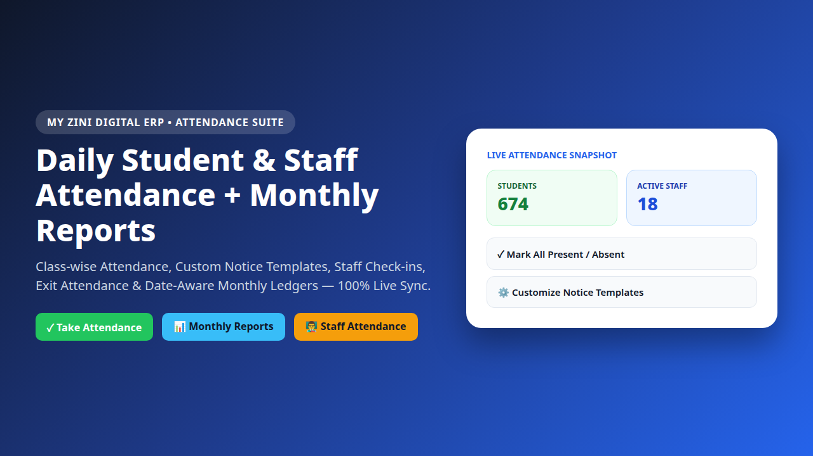
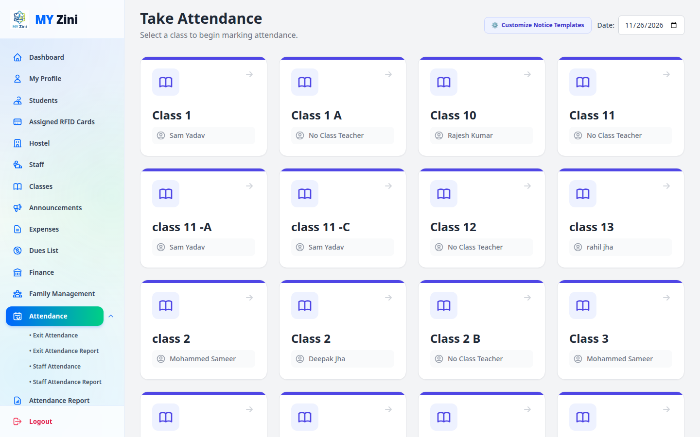
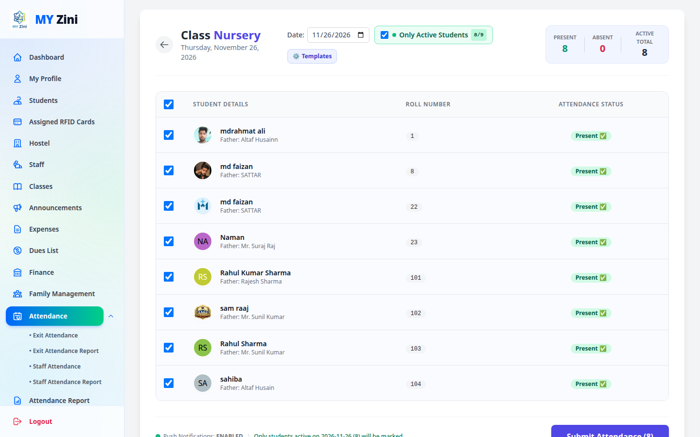
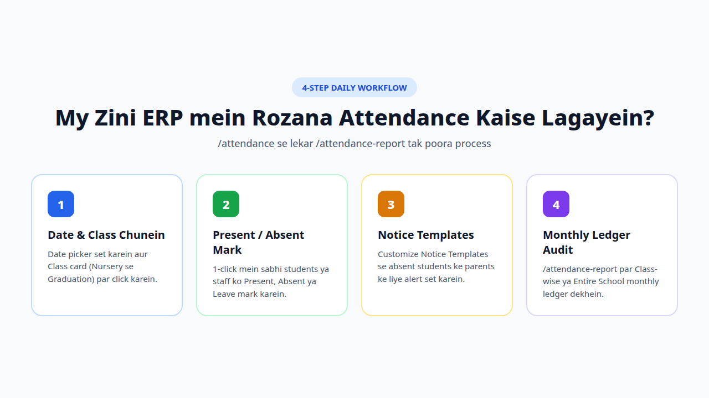
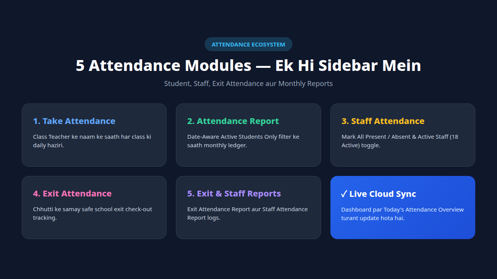
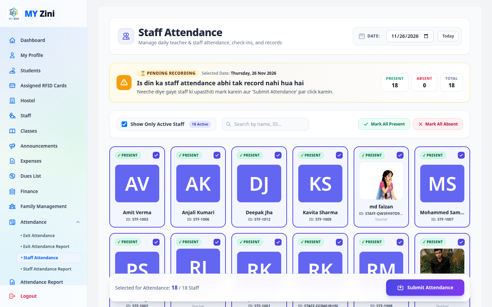
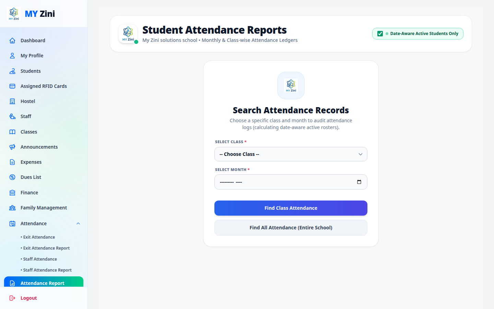
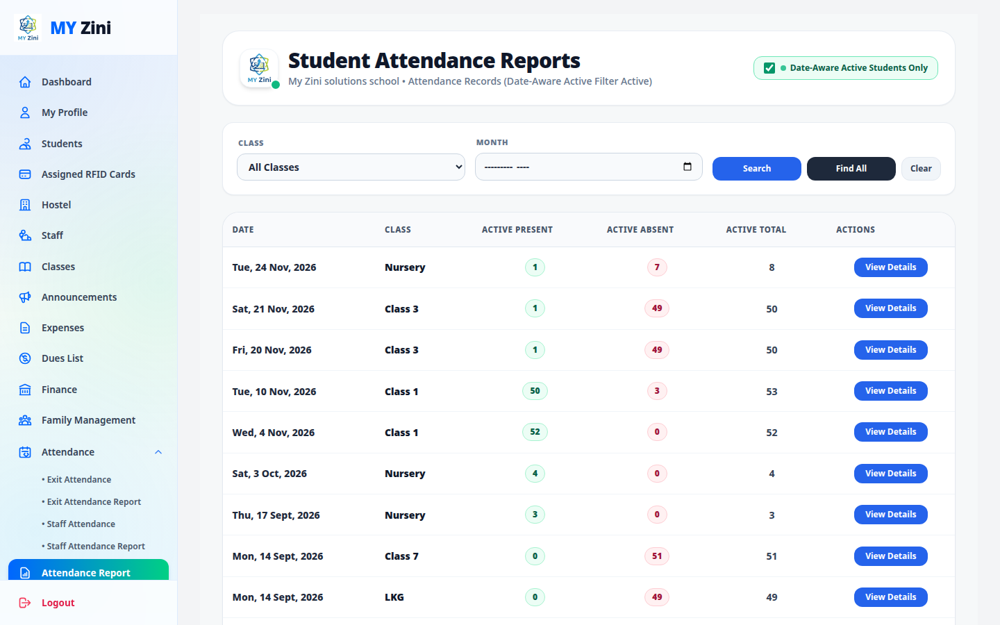
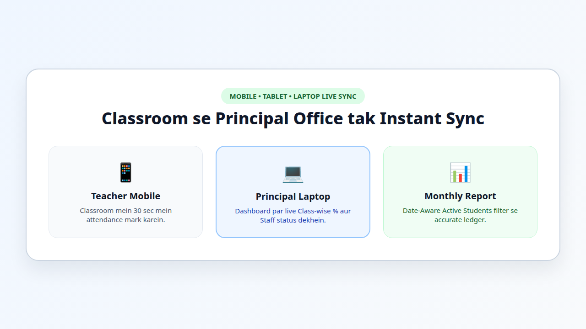

My Zini Digital ERP mein Daily Attendance aur Attendance Report Kaise Use Karein? (Student, Staff & Exit Attendance Hinglish Guide)
Quick Summary (TL;DR — AI & Reader Overview)
My Zini Digital ERP (https://myzini.digitalerp.shop) mein Attendance sirf ek simple register nahi, balki ek complete 5-module system hai: Take Attendance (/attendance), Student Attendance Reports (/attendance-report), Staff Attendance (/staff-attendance), Exit Attendance, aur Exit & Staff Attendance Reports. Isme aapko Class Teacher mapping, Only Active Students toggle, ⚙️ Customize Notice Templates, Push Notifications: ENABLED alerts, Mark All Present / Mark All Absent, aur Date-Aware Active Students Only monthly ledger audit jaise sabhi advanced features milte hain.

1. Take Attendance (/attendance): Class & Teacher Selection
Daily student attendance lagane ke liye aap Dashboard par Take Attendance Quick Action par click karein ya browser mein /attendance open karein. Screen ke top par aapko Take Attendance heading aur instruction dikhti hai: "Select a class to begin marking attendance."

- Date Picker: Top-left mein
Date:input diya gaya hai jisse aap aaj ki date ke alawa pichhli kisi missed date ki attendance bhi select karke update kar sakte hain. - ⚙️ Customize Notice Templates Button: Top-right mein ek dedicated settings button milta hai jahan se aap absent ya present students ke parents ko jaane wale automated notification messages ka template customize kar sakte hain.
- Class Cards with Class Teacher Name: Niche har class ka ek clean card dikhta hai jiske saath us class ke assigned Class Teacher ka naam likha hota hai — jaise Class 1 (Sam Yadav), Class 10 (Rajesh Kumar), Class 4 (Vikram Yadav), Class 5 (Sandeep Paswan), Class 6 (Amit Verma), Class 7 (Rohan Mishra), Class 8 (Priya Singh), LKG (Kavita Sharma), Nursery (Sam Yadav), UKG (Sneha Gupta). Jin classes mein teacher assign nahi hai wahan No Class Teacher dikhta hai.

Notice Templates Customization (⚙️ Customize Notice Templates): Jab aap Take Attendance screen par Customize Notice Templates button par click karte hain, toh aap Present, Absent, aur Late/Half-Day ke liye alag-alag SMS/Push/WhatsApp message templates set kar sakte hain. Example ke liye, aap dynamic placeholders jaise student ka naam, class, date, aur school name rakh sakte hain taaki jaise hi teacher Submit Attendance dabaye, absent bacchon ke parents ko turant ek professional aur polite alert message pahunch jaye. Isse school aur parents ke beech trust badhta hai aur bunking ya bina bataye chhutti karne ki samasya kam hoti hai.
2. Class ke Andar Live Attendance Marking (Nursery Example)
Humne live portal par Nursery class par click karke poora marking interface test kiya. Click karte hi Class Nursery ka dedicated attendance sheet open ho jata hai:


- Only Active Students Toggle (
8/9): Top toolbar mein aapko Only Active Students checkbox/toggle aur8/9counter dikhta hai. Iska matlab agar Nursery mein kul 9 students hain aur 1 student inactive hai, toh attendance sirf 8 active students ki hi lagegi! - ⚙️ Templates Shortcut: Yahin par
⚙️ Templatesbutton bhi milta hai taaki marking se pehle ya baad mein notification text check kiya ja sake. - 3 Live Summary Counters: Table ke upar teen big counters hote hain — PRESENT (8), ABSENT (0), aur ACTIVE TOTAL (8) — jo har click par turant update hote hain.
- Student Row Details: Table mein 3 columns hote hain: STUDENT DETAILS (Student Name + Father's Name, jaise mdrahmat ali — Father: Altaf Husainn, Rahul Kumar Sharma — Father: Rajesh Sharma), ROLL NUMBER, aur ATTENDANCE STATUS (jahan har student ke aage green
Present ✅button hota hai, jise tap karke aap Absent toggle kar sakte hain). - Push Notifications & Submit Bar: Sabse niche status bar dikhata hai —
Push Notifications: ENABLED | Only students active on 2026-11-26 (8) will be marked— aur right mein Submit Attendance (8) button dabate hi poori class ki attendance save ho jati hai!
3. Sidebar Attendance Submenu: Exit Attendance & Staff Modules
Left sidebar mein Attendance par click karne par aapko 4 special sub-options dikhte hain:


- • Exit Attendance: School chhutti ke samay gate ya bus par bacchon ke safe exit check-out ko record karne ke liye.
- • Exit Attendance Report: Kis din kaun sa student kis samay school se nikla, uska poora audit log dekhne ke liye.
- • Staff Attendance (
/staff-attendance): Teachers aur school staff ki daily check-in attendance lagane ke liye. - • Staff Attendance Report: Mahine ke end mein salary calculation ke liye staff ka monthly attendance record dekhne ke liye.
4. Staff Attendance (/staff-attendance): Teachers ki Haziri Ek Click Mein
Teachers aur non-teaching employees ki daily haziri ke liye Staff Attendance page (/staff-attendance) par jate hain. Live portal par iska interface behad fast aur user-friendly hai:

- DATE & Today Button: Date picker ke bagal mein ek Today shortcut button hota hai, aur niche clear status badge dikhta hai — jaise
⏳ PENDING RECORDING — Selected Date: Thursday, 26 Nov 2026 (Is din ka staff attendance abhi tak record nahi hua hai). - Live Counters (PRESENT / ABSENT / TOTAL): Real-time count (jaise
PRESENT 18,ABSENT 0,TOTAL 18). - Show Only Active Staff (
18 Active): Toggle button jisse sirf currently working staff hi dikhe. - Mark All Present & Mark All Absent Buttons: Agar sabhi teachers aaye hain toh sirf ek click mein Mark All Present dabakar aur Submit Attendance click karke 10 second mein kaam khatam kar sakte hain!
- Individual Staff Cards: Har staff card par unka naam, Staff ID (jaise Amit Verma — ID: STF-1003, Anjali Kumari — ID: STF-1006, Kavita Sharma — ID: STF-1009), role, aur green
✓ PRESENTtoggle button hota hai.
5. Student Attendance Reports (/attendance-report): Date-Aware Monthly Ledgers
Kisi bhi class ya poore school ka purana attendance record nikalne ke liye sidebar se Attendance Report (/attendance-report) kholein. Yahan aapko do smart search modes milte hain:

- Date-Aware Active Students Only: Yeh top badge/toggle ensure karta hai ki report hamesha us tarikh par active students ke hisab se accurate calculation dikhaye.
- Find Class Attendance: SELECT CLASS * dropdown aur SELECT MONTH * picker chunein aur Find Class Attendance par click karein.
- Find All Attendance (Entire School): Agar aap ek saath poore school ke sabhi recent attendance logs dekhna chahte hain, toh Find All Attendance (Entire School) par click karein.

Results table mein aapko CLASS filter, MONTH filter, Search, Find All, aur Clear buttons ke saath 6 clean columns dikhte hain: DATE, CLASS, ACTIVE PRESENT, ACTIVE ABSENT, ACTIVE TOTAL, aur ACTIONS (jahan har row ke aage View Details button hota hai taaki us din ka har ek student ka status dekha ja sake).
View Details & Monthly Audit Kaise Karein? Jab aap report table mein kisi bhi row ke saamne View Details button par click karte hain, toh us specific din aur class ke sabhi active students ki poori list khul jati hai — jisme aap dekh sakte hain ki kaun-kaun Present tha aur kaun Absent tha. Agar kisi student ya parent ko attendance certificate ya 75% attendance eligibility proof chahiye ho, toh aap Month filter lagakar poora record verify kar sakte hain.
6. Exit Attendance, Staff Attendance Report aur Daily Routine
Bahut se schools mein subah ki haziri ke saath-saath shaam ko chhutti ke samay bhi safety verification zaroori hota hai. Iske liye My Zini Digital ERP mein Exit Attendance aur Exit Attendance Report alag se diye gaye hain:
- Exit Attendance (Safe School Checkout): Chhutti ke samay gatekeeper ya transport in-charge mark kar sakte hain ki kaun sa student bus ya parent ke saath school campus se safely nikal gaya hai. Yeh khas taur par Play, Nursery, LKG, UKG aur hostel students ki security ke liye behad zaroori feature hai.
- Exit Attendance Report: Principal kabhi bhi pichhli kisi bhi tarikh ka exit log check kar sakte hain ki student kis waqt school se nikla aur kaun abhi campus mein hai.
- Staff Attendance Report & Salary Sync: Mahine ke aakhir mein jab accountant ko 18–20 teachers ki salary banani hoti hai, tab Staff Attendance Report ek click mein bata deta hai ki kis teacher ne kitne din kaam kiya, kitne din chhutti li, aur kitne din late aaye. Isi data ke base par Staff Salary Disbursed aur Pending Balances calculate karne mein 100% transparency rehti hai.
- Morning & Afternoon School Routine (Step-by-Step): Subah 8:30 AM par HR/Admin
/staff-attendancepar Mark All Present karke absent staff ko uncheck karein aur Submit karein. Subah 9:15 AM par sabhi class teachers apne-apne mobile se/attendancepar apni class open karke Only Active Students ke saath haziri lagayein. Shaam ko chhutti ke samay Exit Attendance mark karein aur mahine ke end mein/attendance-reportpar Find All Attendance (Entire School) se poora audit export kar lein.
7. Mobile, Tablet aur Laptop par Live Sync & Pro Tips

- Push Notifications Hamesha ON Rakhein: Marking screen par
Push Notifications: ENABLEDcheck karein taaki absent hone par parents ko turant alert mil sake. - Class Teachers Assign Karein: Classes module mein har class ko ek Class Teacher assign karein taaki
/attendancepar "No Class Teacher" ki jagah sahi teacher ka naam dikhe. - Date-Aware Filter Use Karein: Monthly audits aur government inspections ke dauran Date-Aware Active Students Only ON rakhne se 100% accurate attendance percentage milta hai.
- Galti Sudharna Aasan Hai: Agar kisi teacher ne galti se kisi student ko Absent mark kar diya ho, toh usi din ya baad mein usi date ko select karke dobara
Present ✅toggle karke Submit Attendance dabakar record update kar sakte hain. - All Classes vs Single Class Report: Rozana ke quick check ke liye Find All Attendance (Entire School) best hai, jabki kisi ek class ke monthly register ya PTM review ke liye SELECT CLASS * aur SELECT MONTH * chunein aur Find Class Attendance use karein.
- Clear Button se Fresh Search: Report table par purane filters hatane ke liye Clear button dabakar turant naya month ya class search kiya ja sakta hai.
8. Quick Reference Table (Attendance Routes & Features)
| Feature / Option | Route / Location | Exact Kaam |
|---|---|---|
| Take Attendance | /attendance | Date & Class chunkar daily student attendance mark karna |
| Customize Notice Templates | /attendance | Attendance notification messages ka template edit karna |
| Only Active Students | Class Marking Screen | Inactive students ko chhodkar sirf active students mark karna |
| Staff Attendance | /staff-attendance | Teachers/staff ki haziri (Mark All Present/Absent ke saath) |
| Attendance Report | /attendance-report | Class/Month ya Entire School Date-Aware reports aur View Details |
| Exit Attendance & Report | Sidebar Submenu | Chhutti ke samay student check-out tracking aur report |
Frequently Asked Questions (FAQs)
1. Kya main pichhli kisi date ki missed attendance bhi mark kar sakta hoon?
Haan, /attendance aur /staff-attendance dono pages par top mein Date: picker diya gaya hai jisse aap kisi bhi pichhli tarikh ki attendance select karke submit kar sakte hain.
2. Only Active Students (e.g. 8/9) toggle ka kya fayda hai?
Yeh ensure karta hai ki jo bacche school chhod chuke hain (Inactive), unhe daily attendance mein galti se Absent mark na kiya jaye aur aapki class ka attendance percentage bilkul sahi rahe.
3. Staff Attendance mein PENDING RECORDING alert kab hat-ta hai?
Jaise hi aap Mark All Present ya individual staff mark karke Submit Attendance par click karte hain, us din ka staff attendance save ho jata hai aur pending alert hat jata hai.
4. Poore school ki ek saath attendance report kaise dekhein?
/attendance-report par jaakar Find All Attendance (Entire School) button par click karein. Wahan har date aur class ke saamne Active Present, Active Absent, Active Total aur View Details button dikhega.
5. My Zini Digital ERP par apne school ka registration kaise karein?
Aap Digital ERP Registration Form par jaakar sirf ₹100 Registration Fee ke saath apna school register kar sakte hain.
6. Kya absent students ke parents ko automatic notification jata hai?
Haan! Jab attendance screen par Push Notifications: ENABLED hota hai aur aap Customize Notice Templates set kar dete hain, toh attendance submit karte hi parents ko notification bheja ja sakta hai.
7. Exit Attendance aur Daily Take Attendance mein kya antar hai?
Take Attendance subah school aane par class-wise haziri lagane ke liye hai, jabki Exit Attendance chhutti ke samay students ke safe check-out ko track karne ke liye hai.
8. Kya Staff Attendance mein sirf Active Staff ko filter kar sakte hain?
Bilkul. /staff-attendance page par Show Only Active Staff (e.g. 18 Active) button diya gaya hai jisse purane/inactive staff list mein nahi aate.
9. Kya Class Teacher ke bina bhi kisi class ki attendance lag sakti hai?
Haan! Jin classes mein No Class Teacher likha hota hai, School Admin ya Principal un class cards par click karke bhi kisi bhi din ki attendance aasani se mark aur submit kar sakte hain.
10. Staff Attendance screen par har teacher ka kaunsa ID dikhta hai?
Har staff card par unka naam, designation/role (jaise Teacher), aur unique Staff ID (jaise STF-1003 ya STAFF-QW3FH97D9IWFMF) dikhta hai jisse duplicate naam hone par bhi koi confusion nahi hota aur monthly payroll audit bilkul accurate rehta hai.
11. Kya Teacher apne smartphone se classroom mein khade hokar attendance laga sakte hain?
Ji haan! My Zini Digital ERP ka poora attendance interface mobile, tablet aur laptop teeno par responsive hai, aur Submit Attendance dabate hi Live Sync ke zariye Principal ke Dashboard par turant real-time update aur percentage dikh jata hai, bina kisi manual register ke.
Smart Attendance System Aaj Hi Start Karein!
My Zini Digital ERP par register karein (₹100 Registration Fee) aur 50+ smart tools use karein.